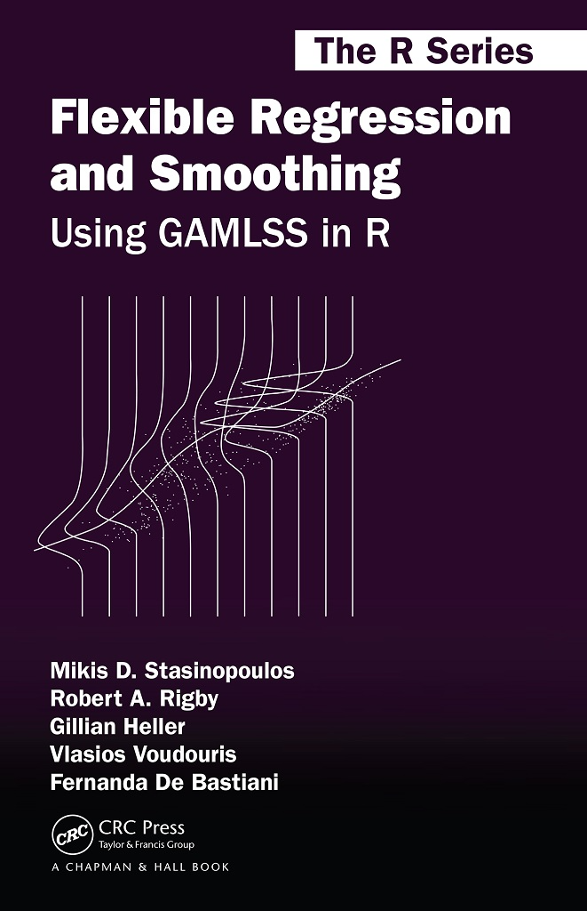

flowchart TB
A[model] --> B(assumptions)
B --> C[fit] --> D{check} -->|adequate| E(stop)
D --> |not good| B
Regression
Introduction
Regression modelsDataDistributionsFittingSelectionComparisonInterpretation
Through a simple data example
Regression models
Models and statistical modellingAssumptionsRegression ModelsDistributional RegressionExample
Statistical modelling
Statistical models
“all models are wrong but some are useful”.
– George Box
Models should be parsimonious
Models should be fit for purpose and able to answer the question at hand
Statistical models have a stochastic component
All models are based on assumptions.
A common theme in the following scientific subjects; statistical analysis; statistical inference; statistical modelling; machine learning; statistical learning; data mining; information harvesting; information discovery; knowledge extraction; data analytics, is data.
Assumptions
Assumptions are made to simplify things
Explicit assumptions
Implicit assumptions
it is easier to check the explicit assumptions rather the implicit ones
Model circle
We keep going until we find an adequate model
Regression
- \[ X \stackrel{\textit{M}(\theta)}{\longrightarrow} Y \]
- \(y\): targer, the y or the dependent variable
- \(X\): explanatory, features, x’s or independent variables or terms
\(M(\theta)\) is a model depending on parameters \(\theta\)
Linear Model
- standard way
\[ \begin{equation} y_i= b_0 + b_1 x_{1i} + b_2 x_{2i}, \ldots, b_p x_{pi}+ \epsilon_i \end{equation} \tag{1}\]
the model \(M(\theta)\) is linear, and there are \(n\) observations for \(i=1,2,\ldots,n\).
Linear Model
- different way
\[ \begin{eqnarray} y_i & \stackrel{\small{ind}}{\sim } & {N}(\mu_i, \sigma) \nonumber \\ \mu_i &=& b_0 + b_1 x_{1i} + b_2 x_{2i}, \ldots, b_p x_{pi} \end{eqnarray} \tag{2}\]
the model \(M(\theta)\) is linear, \(\mu\) and \(\sigma\) are the parameter and \(\beta\) are the linear coefficients.
Additive Models
\[ \begin{eqnarray} y_i & \stackrel{\small{ind}}{\sim } & {N}(\mu_i, \sigma) \nonumber \\ \mu_i &=& b_0 + s_1(x_{1i}) + s_2(x_{2i}), \ldots, s_p(x_{pi}) \end{eqnarray} \tag{3}\]
\(s(x)\) are smooth functions determined by the data
Machine Learning Models
\[\begin{eqnarray} y_i & \stackrel{\small{ind}}{\sim }& {N}(\mu_i, \sigma) \nonumber \\ \mu_i &=& ML(x_{1i},x_{2i}, \ldots, x_{pi}) \end{eqnarray} \tag{4}\]
All models concentrate on the mean and implicitly assumed a symmetric distribution
Generalised Linear Models
\[\begin{eqnarray} y_i & \stackrel{\small{ind}}{\sim }& {E}(\mu_i, \phi) \nonumber \\ g(\mu_i) &=& b_0 + b_1 x_{1i} + b_2 x_{2i}, \ldots, b_p x_{pi} \end{eqnarray} \tag{5}\]
\({E}(\mu_i, \phi)\) :
Exponentialfamily\(g(\mu_i)\) : the
linkfunction
Still modelling only shifts in the mean
Distributional regression
Distributional regression
\[ X \stackrel{\textit{M}(\boldsymbol{\theta})}{\longrightarrow} D\left(Y|\boldsymbol{\theta}(\textbf{X})\right) \]
All parameters \(\boldsymbol{\theta}\) could functions of the explanatory variables \(\boldsymbol{\theta}(\textbf{X})\).
\(D\left(Y|\boldsymbol{\theta}(\textbf{X})\right)\) can be any \(k\) parameter distribution
Generalised Additive models for Location Scale and Shape
\[\begin{eqnarray} y_i & \stackrel{\small{ind}}{\sim }& {D}( \theta_{1i}, \ldots, \theta_{ki}) \nonumber \\ g(\theta_{1i}) &=& b_{10} + s_1({x}_{1i}) + \ldots, s_p({x}_{pi}) \nonumber\\ \ldots &=& \ldots \nonumber\\ g({\theta}_{ki}) &=& b_0 + s_1({x}_{1i}) + \ldots, s_p({x}_{pi}) \end{eqnarray} \tag{6}\]
for \(i=1,2,\ldots,n\).
GAMLSS + ML
\[\begin{eqnarray} y_i & \stackrel{\small{ind}}{\sim }& {D}( \theta_{1i}, \ldots, \theta_{ki}) \nonumber \\ g({\theta}_{1i}) &=& {ML}_1({x}_{1i},{x}_{2i}, \ldots, {x}_{pi}) \nonumber \\ \ldots &=& \ldots \nonumber\\ g({\theta}_{ki}) &=& {ML}_1({x}_{1i},{x}_{2i}, \ldots, {x}_{pi}) \end{eqnarray} \tag{7}\]
for \(i=1,2,\ldots,n\).
Example
Figure 1 Abdominal circumference against gestation age.
abdom data.Fitting Models
library(ggplot2)
library(gamlss.ggplots)
library(gamlss.add)
# Linear
lm1 <- gamlss(y~x, data=abdom, trace=FALSE)
# additive smooth
am1 <- gamlss(y~pb(x), data=abdom,trace=FALSE)# smooth
# neural network
set.seed(123)
nn1 <- gamlss(y~nn(~x), size=5, data=abdom, trace=FALSE)# neural
# regression three
rt1 <- gamlss(y~tr(~x), data=abdom, trace=FALSE)# three
GAIC(lm1, am1, nn1, rt1) df AIC
am1 6.508274 4948.869
nn1 12.000000 4965.171
lm1 3.000000 5008.453
rt1 14.000000 5305.390Linear Model
Additive Smooth Model
Neural network

Regression Tree
Diagnostics: QQ plot
am1 modelDiagnostics: Bucket plot
Refit
am2 <- gamlss(y~pb(x),~pb(x), data=abdom,trace=FALSE)# smooth
FD <- chooseDist(am2, parallel="snow", ncpus = 10L)minimum GAIC(k= 2 ) family: ST3
minimum GAIC(k= 3.84 ) family: LO
minimum GAIC(k= 6.41 ) family: LO am3 <- update(am2, family=LO) QQ plot, Logistic
am1 modelBucket plot, Logistic
am1 modelFitted Centiles

am1 modelFitted Distributions
Summary
The additive smooth model is the best parsimonious model
A kurtotic distribution is adequate for the data
No simple Machine Learning method will do because there is kurtosis and we are interested in centiles
quantile regressioncould be used here but in general it is more difficult to check the implicit assumptions made
Tip
Implicit assumptions are more difficult to check
end
 
 The Books
The Books